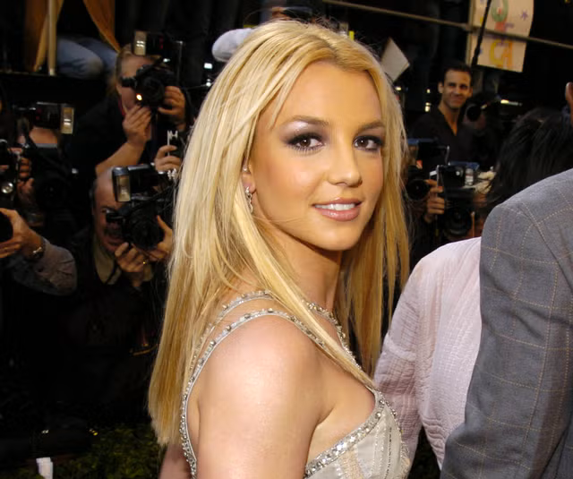
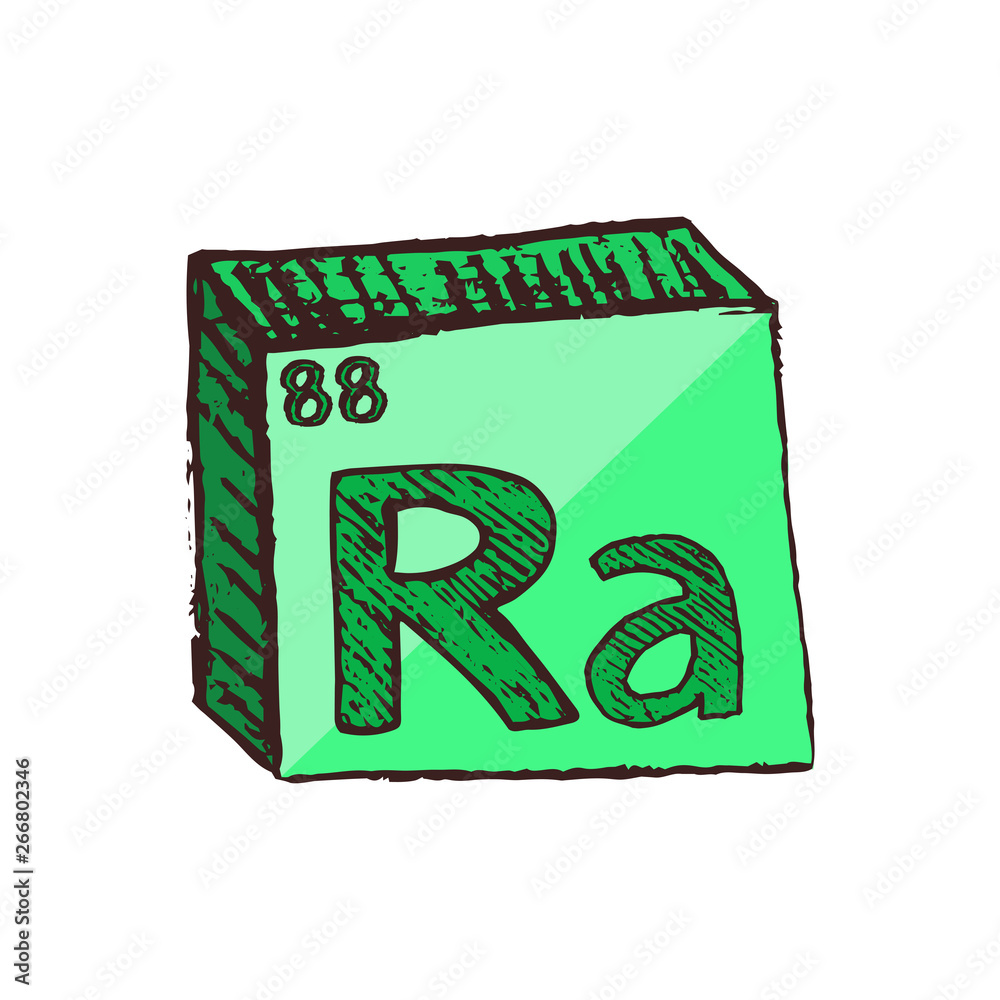
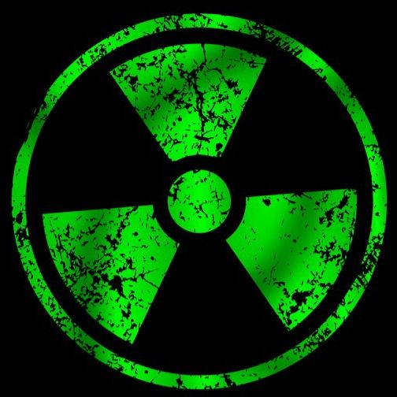

Britney Spears
About Britney Spears
Britney Spears is an American pop icon born in McComb, Mississippi, and raised in Kentwood, Louisiana. After appearing on The All-New Mickey Mouse Club as a child, she signed with Jive Records at age fifteen and revolutionized late-1990s teen pop with her chart-topping 1999 debut album, ...Baby One More Time, followed by 2000's Oops!... I Did It Again.
As the 2000s progressed, Britney evolved her sound toward darker, more sophisticated dance-pop and club textures. Working alongside pioneering producers Bloodshy & Avant, she recorded "Toxic" for her fourth studio album, In the Zone (2003). The song stood out immediately thanks to its high-octane mix of Bollywood string samples, surf guitar riffs, and heavy basslines.
Released as a single in early 2004, "Toxic" became a worldwide smash, reaching the top 10 on the Billboard Hot 100 and earning Britney her first Grammy Award for Best Dance Recording in 2005. Its futuristic, spy-thriller music video solidified her status as a visual visionary, making "Toxic" one of the most acclaimed and enduring pop singles of the 21st century.
TOXIC
Baby so are.
can't shoul
you see a d
I'm calling
A guy like
you should
wear a warn-
ing. It's
dangerous, I'm lov
it. Too high, can't co
down. Losing my head, spinnin
round and 'round. Do you feel me
now? With a taste of your lips, I'm
on a ride. You're toxic, I'm slippin'
under. With a taste of a poison paradise
I'm addicted to you, don't you know that
you're toxic? And I love what you do, do
you know that you're toxic? Intoxi- with
cate me now, with your love now. Oh, wit
a taste of your lips, I'm on a ride. You
are toxic, I'm slippin' under. With a
taste of a poison paradise, I'm addicted
to you, don't you know that you're toxic
Now with a taste of your lips, I'm on a
ride. You're toxic, I'm slippin' under.
With a taste of a poison paradise, I'm
addicted now! Intoxicate me now, with
your love now. Oh, you're toxic, and I
love what you do, do you know that you
are toxic? With a taste of your lips, I
on a ride. You're toxic, I'm slippin are
under With a taste of a poison paradise.
I'm addicted to you, don't you know that
you're toxic? And I love what you do, do
you know that you're toxic? Intoxicate a
me now, with your love now. Oh, with a d
taste of your lips, I'm on a ride. You a
are toxic, I'm slippin' under. With a Ba
taste of a poison paradise, I'm addicted
to you, don't you know that you're toxic?


